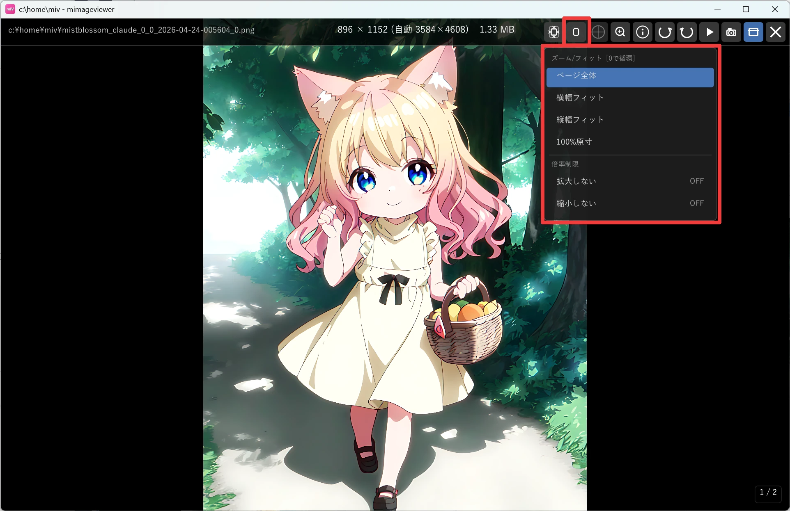
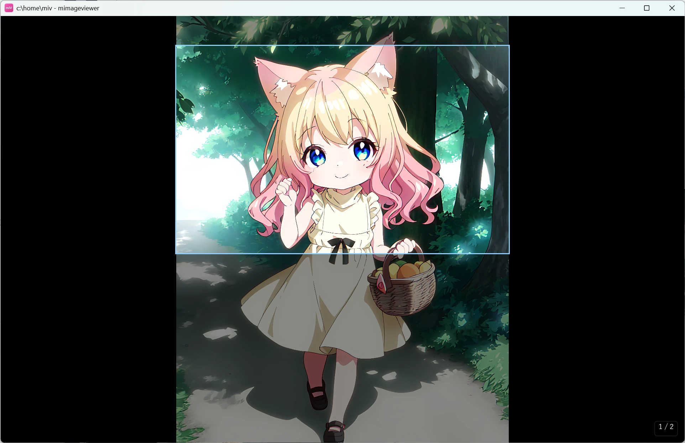
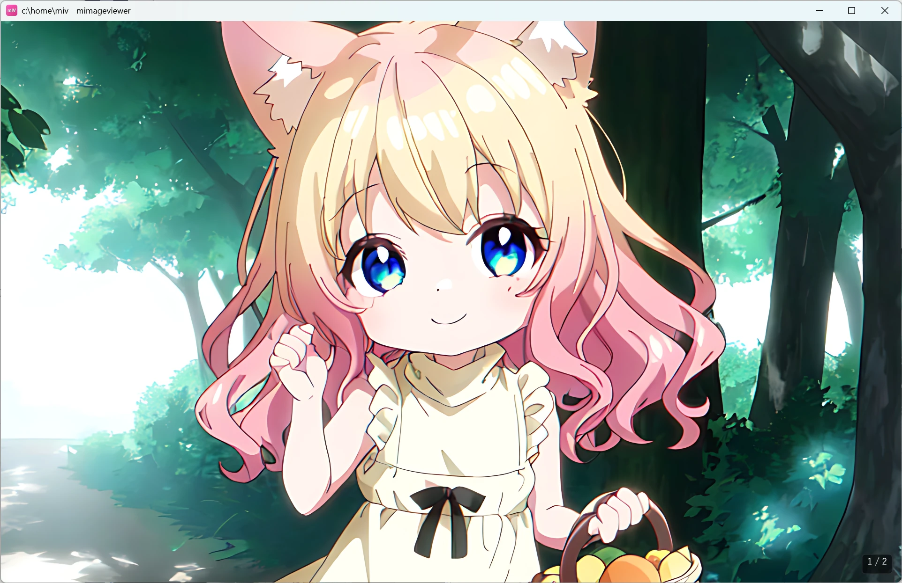
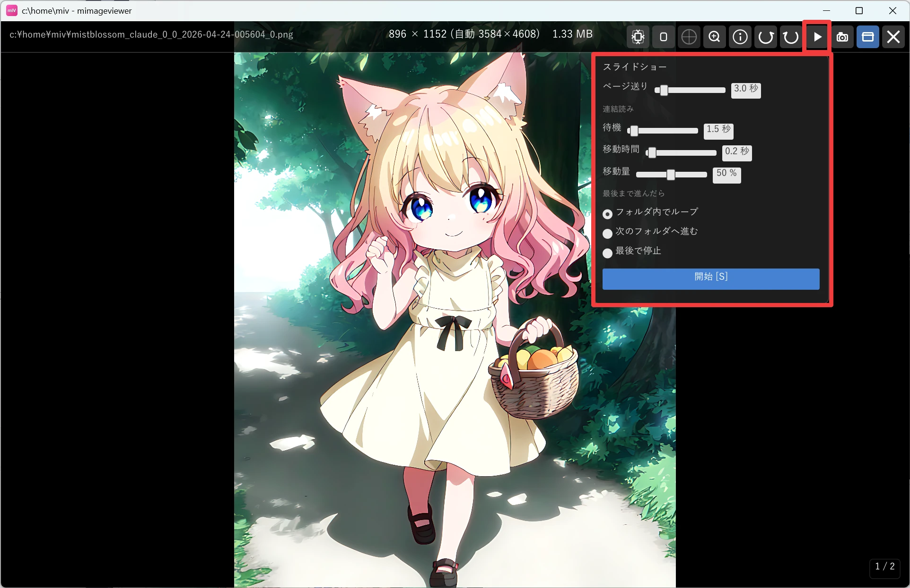
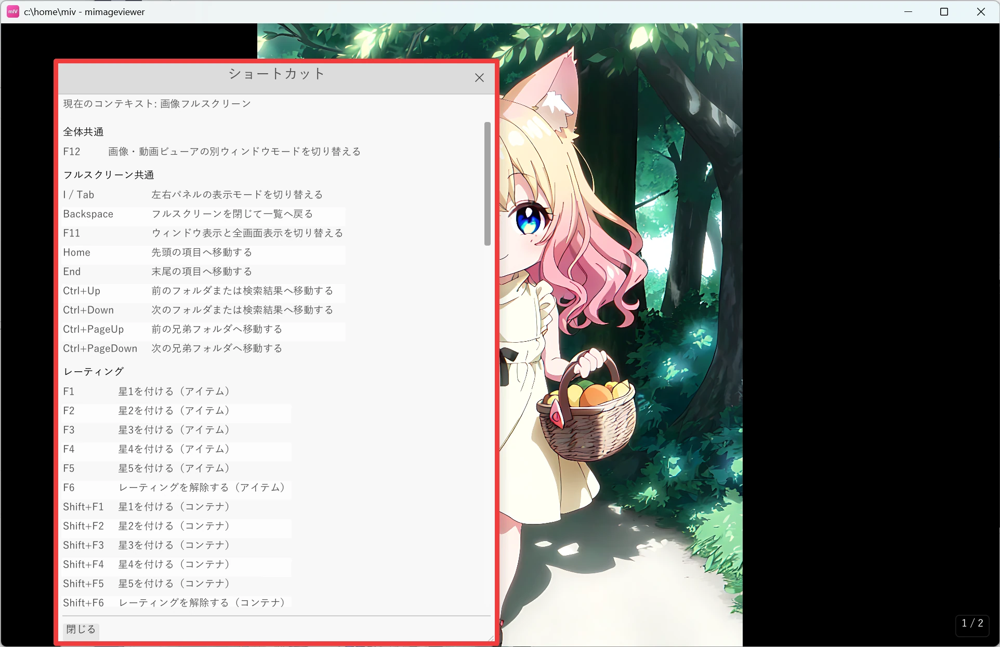

フルスクリーン閲覧の基本
画像をダブルクリックしてフルスクリーンで開いたあと、まず覚えておきたい操作をまとめました。 表示サイズの切り替え、部分拡大、拡大縮小とパン、そして「今の画面で使えるキー」を確認する方法まで、 キーボードだけでサクサク読み進めるための基本です。
表示サイズを切り替える
フルスクリーンで画像を開くと、既定では画面にフィットするサイズで表示されます。 画面上部のホバーバーに出るズーム/フィットボタンをクリックすると、次の 4 つから表示サイズを選べます。 0 キーを押すと、同じ順番で切り替わります（末尾まで行くと先頭に戻る循環）。
- ページ全体フィット
- 横幅フィット
- 縦幅フィット
- 100%原寸

ルーペでカーソル周辺を確認する
既定では Shift を押している間だけルーペが表示され、カーソル周辺を一時的に拡大できます。 M キーを押すと、ルーペを固定表示するかどうかを切り替えられます。
ルーペは画像全体の表示を変えず、カーソルを当てた細部をその場で確認するための機能です。 Z の部分拡大ズームは、指定した範囲を画面いっぱいに広げ、拡大したまま位置を動かして読むときに向いています。
部分拡大ズーム（Z キー）
漫画や図版の一部を画面いっぱいに拡大し、マウスを動かすだけで拡大位置をパンできる機能です。 細かい描き込みを、ページをめくりながら拡大したまま読み進められます。
| 操作 | 動き |
|---|---|
| Z を押している間 | 画像全体の上に、拡大される範囲を示す枠が表示されます。マウスで枠を移動、ホイールで枠の大きさ（＝拡大倍率）を変えられます |
| Z を離す | 枠で選んだ範囲が画面いっぱいに拡大されます。以降はマウスを動かすだけで拡大位置がパンします |
| Z を短く押す | 枠で範囲を決めなくても、その場ですぐ拡大表示に入れます |
| 拡大中のマウスホイール | 通常どおり前後のページへ移動します（拡大したまま読み進められます） |
| 拡大中の Ctrl+ホイール | 拡大倍率を変更します |
| もう一度 Z | 拡大を解除して、元のフィット表示に戻ります |


拡大縮小とパン（Ctrl+ホイール / ドラッグ）
部分拡大ズームとは別に、通常表示のまま任意の倍率まで拡大・縮小することもできます。
| 操作 | 動き |
|---|---|
| Ctrl+マウスホイール | マウス位置を中心にズーム（0.1〜50 倍） |
| 左ドラッグ（ズーム中） | パン（拡大した画像を動かして見たい部分を表示） |
| ダブルクリック | ズーム / パン / 回転をリセットして元の表示に戻す |
拡大中に画像を切り替えると、Ctrl+ホイールのズームとパンはリセットされ、次の画像は通常表示から始まります。R / L の 90° 回転は画像ごとに保存されるため、移動先ではその画像に保存された回転が使われます。
回転・背景を切り替える
画面上部のホバーバーにある回転ボタンで左右へ 90° 回転できます（R / L キーでも回転できます）。
| キー | 動き |
|---|---|
| R | 右に 90° 回転 |
| L | 左に 90° 回転 |
| B | 透過部分の背景色を黒 → 白 → 市松の順で切り替え（透過のない画像では無効） |
R / L の回転は元のファイルを書き換えず、画像ごとの設定として保存されます。
スライドショーで自動送りする
上部ホバーバーの ▶ ボタンから設定ポップアップを開き、間隔や末尾動作を確認して開始できます。 すぐ再生 / 停止を切り替えるには S キーを使います。再生中は画面右上の小さな円で、 次の切り替えまでの進み具合が分かります。動画は自動でスキップして次の画像へ進みます。
- 設定ポップアップでは、ページ送り間隔・連結読みのスクロール量・末尾動作を確認できます。
- 末尾動作は「フォルダ内でループ / 次のフォルダへ進む / 最後で停止」から選べます。
- 再生中にホイール・クリック・矢印・Home / End でフォルダ内を移動しても、再生は止まりません（見たくない画像を飛ばしながら流し見できます）。止めるときは S / Space / Esc、またはフォルダ移動（Ctrl+↑/↓）です。

今使えるキーを確認する（? キー）
操作を覚えきれなくても大丈夫です。? キーを押すと、今のフルスクリーン画面で使える ショートカット一覧がその場に表示されます。表示中のモード（通常閲覧・消しゴム・隠蔽加工など）ごとに 内容が変わるので、迷ったらまず ? を押す習慣をつけると安心です。

操作早見表
| キー | できること |
|---|---|
| 0 | ページ全体 → 横幅フィット → 縦幅フィット → 100%原寸で表示サイズを循環 |
| Z（押す/離す） | 画面いっぱいの部分拡大ズーム。押している間に範囲を選び、離すと拡大・マウスでパン |
| Ctrl+ホイール | マウス位置を中心に拡大縮小（0.1〜50 倍） |
| 左ドラッグ（ズーム中） | パン |
| R / L | 右 / 左に 90° 回転 |
| B | 透過背景色を黒 / 白 / 市松で切り替え |
| S | スライドショーの再生 / 停止（Space / Esc で停止） |
| ? | 今の画面で使えるショートカット一覧を表示 |